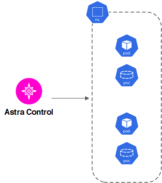
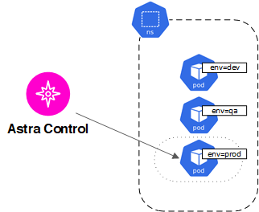
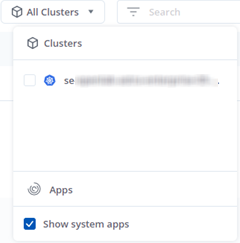

要求變更文件
要求變更文件 編輯此頁面
編輯此頁面 瞭解如何作出貢獻
瞭解如何作出貢獻開始管理應用程式
您先請 "將Kubernetes叢集新增至Astra Control"、您可以在叢集上安裝應用程式（Astra Control之外）、然後前往Astra Control的「應用程式」頁面、開始管理應用程式。
應用程式管理需求
請考慮下列Astra Control應用程式管理需求：
-
授權：若要使用Astra Control Center管理應用程式、您需要Astra Control Center授權。
-
命名空間：Astra Control要求應用程式不超過一個命名空間、但命名空間可以包含多個應用程式。
-
* StorageClass *：如果您安裝的應用程式已明確設定StorageClass、且需要複製應用程式、則複製作業的目標叢集必須具有原本指定的StorageClass。將具有明確設定StorageClass的應用程式複製到沒有相同StorageClass的叢集、將會失敗。
-
* Kubernetes資源*：使用未由Astra Control收集的Kubernetes資源的應用程式、可能沒有完整的應用程式資料管理功能。Astra Control會收集下列Kubernetes資源：
叢集角色 |
ClusterRoleBinding |
組態對應 |
CustomResourceDesDefinition |
CustomResource |
可關係工作 |
示範 |
HorizontalPodAutoscaler |
入侵 |
部署組態 |
互鎖Webhook |
PeristentVolume Claim |
Pod |
Podcast中斷預算 |
Podcast範本 |
網路原則 |
ReplicaSet |
角色 |
角色繫結 |
路由 |
秘密 |
服務 |
服務帳戶 |
狀態集 |
驗證Webhook |
支援的應用程式安裝方法
您可以使用下列方法安裝想要使用Astra Control管理的應用程式：
-
資訊清單檔案：Astra Control支援使用KUbectl從資訊清單檔案安裝的應用程式。例如：
kubectl apply -f myapp.yaml
-
* Helm 3*：如果您使用Helm來安裝應用程式、Astra Control需要Helm版本3。完全支援使用Helm 3（或從Helm 2升級至Helm 3）來管理及複製應用程式。不支援管理以Helm 2安裝的應用程式。
-
操作員部署的應用程式：Astra Control支援以命名空間範圍運算子安裝的應用程式。這些運算子通常採用「傳遞值」而非「傳遞參照」架構來設計。以下是一些遵循這些模式的營運者應用程式：
-

對於k8ssandra、支援就地還原作業。若要還原新命名空間或叢集的作業、必須先關閉應用程式的原始執行個體。這是為了確保傳遞的對等群組資訊不會導致跨執行個體通訊。不支援複製應用程式。
-
請注意、Astra Control可能無法複製以「傳遞參考」架構設計的操作員（例如、CockroachDB操作員）。在這些類型的複製作業中、複製的操作員會嘗試從來源操作員參考Kubernetes機密、儘管在複製程序中有自己的新秘密。由於Astra Control不知道來源營運者的Kubernetes機密資料、因此複製作業可能會失敗。
|
|
運算子及其安裝的應用程式必須使用相同的命名空間；您可能需要修改運算子的部署.yaml檔案、以確保情況如此。 |
在叢集上安裝應用程式
現在您已將叢集新增至Astra Control、即可在叢集上安裝應用程式。在預設情況下、會在新的儲存類別上配置持續磁碟區。在Pod上線後、您可以使用Astra Control來管理應用程式。
Astra Control只有在儲存設備位於由Astra Control安裝的儲存類別時、才會管理狀態化應用程式。
如需從Helm圖表部署一般應用程式的說明、請參閱下列內容：
管理應用程式
當Astra Control探索叢集上執行的應用程式時、這些應用程式會處於不受管理的狀態、直到您選擇要管理的方式為止。Astra Control中的託管應用程式可以是下列任一項：
-
命名空間、包括該命名空間中的所有資源

-
在命名空間內部署有helm3的個別應用程式

-
一組資源、由Kubernetes標籤（在Astra Control中稱為_custom app_）在命名空間內識別

以下各節將說明如何使用這些選項來管理應用程式。
依命名空間管理應用程式
「應用程式」頁面的「探索到」區段會顯示這些命名空間中的命名空間、以及已安裝Helm的應用程式或自訂標記的應用程式。您可以選擇個別或在命名空間層級管理每個應用程式。所有這些都達到資料保護作業所需的精細度。
例如、您可能想要設定每週執行時間的「MARIA」備份原則、但您可能需要比這更頻繁地備份「MariaDB」（位於同一個命名空間）。根據這些需求、您需要分別管理應用程式、而非在單一命名空間下管理。
雖然Astra Control可讓您分別管理階層的兩個層級（命名空間和命名空間中的應用程式）、但最佳實務做法是選擇一個或另一個層級。如果在命名空間和應用程式層級同時執行動作、則Astra Control中所採取的動作可能會失敗。
-
選取*應用程式*、然後選取*已探索*。
-
檢視探索到的命名空間清單、然後展開命名空間以檢視應用程式和相關資源。
Astra Control會在命名空間中顯示Helm應用程式和自訂標記的應用程式。如果有Helm標籤、則會以標籤圖示標示。
-
決定要個別管理每個應用程式、還是在命名空間層級管理。
-
在階層中所需的層級、選取* Actions （動作）欄中的下拉式清單、然後選取* Manage （管理）。
-
如果您不想管理應用程式、請在所需應用程式的*「Actions」（動作）欄中選取下拉式清單、然後選取「 Ignori*」（忽略）。
例如、如果您想要一起管理「Jenkins」命名空間下的所有應用程式、使其具有相同的快照和備份原則、您可以管理命名空間並忽略命名空間中的應用程式。
您選擇管理的應用程式現在可從*「託管」*索引標籤取得。任何忽略的應用程式都會移至*忽略*索引標籤。理想情況下、探索到的索引標籤會顯示零應用程式、以便在安裝新應用程式時、更容易找到及管理。
依Kubernetes標籤管理應用程式
Astra Control在應用程式頁面頂端包含一個名為*定義自訂應用程式*的動作。您可以使用此動作來管理以Kubernetes標籤識別的應用程式。 "深入瞭解如何透過Kubernetes標籤定義應用程式"。
-
選擇*應用程式>定義自訂應用程式*。
-
在「定義自訂應用程式」對話方塊中、提供管理應用程式所需的資訊：
-
新應用程式：輸入應用程式的顯示名稱。
-
叢集：選取應用程式所在的叢集。
-
命名空間：選取應用程式的命名空間。
-
標籤：輸入標籤或從下列資源中選取標籤。
-
選取的資源：檢視及管理您要保護的選定Kubernetes資源（Pod、機密、持續磁碟區等）。
-
展開資源並選取標籤數量、即可檢視可用的標籤。
-
選取其中一個標籤。
選擇標籤後、標籤會顯示在*標籤*欄位中。Astra Control也會更新*未選取的資源*區段、以顯示與所選標籤不符的資源。
-
-
未選取的資源：確認您不想保護的應用程式資源。
-
-
選擇*定義自訂應用程式*。
Astra Control可管理應用程式。您現在可以在*託管*索引標籤中找到它。
系統應用程式呢？
Astra Control也會探索Kubernetes叢集上執行的系統應用程式。您可以篩選應用程式清單來檢視這些項目。

我們預設不會顯示這些系統應用程式、因為您很少需要備份這些應用程式。